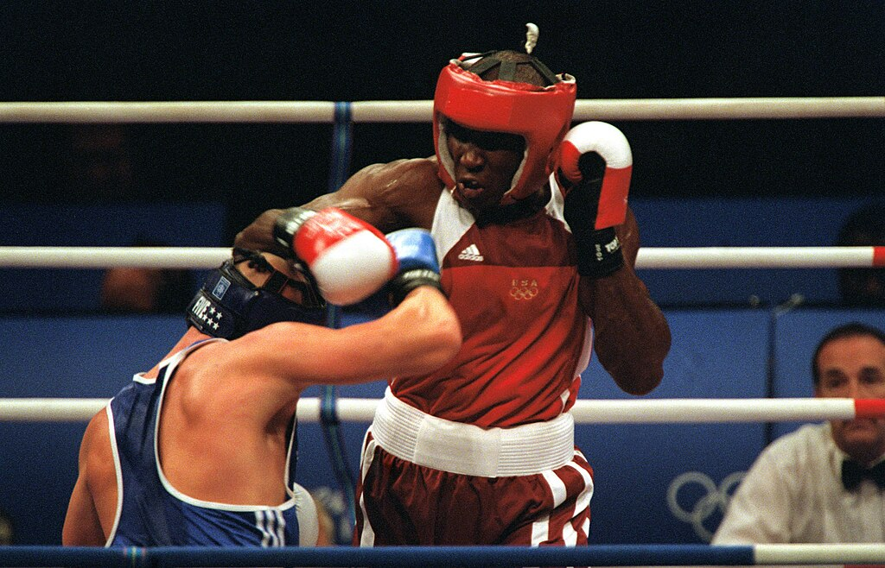
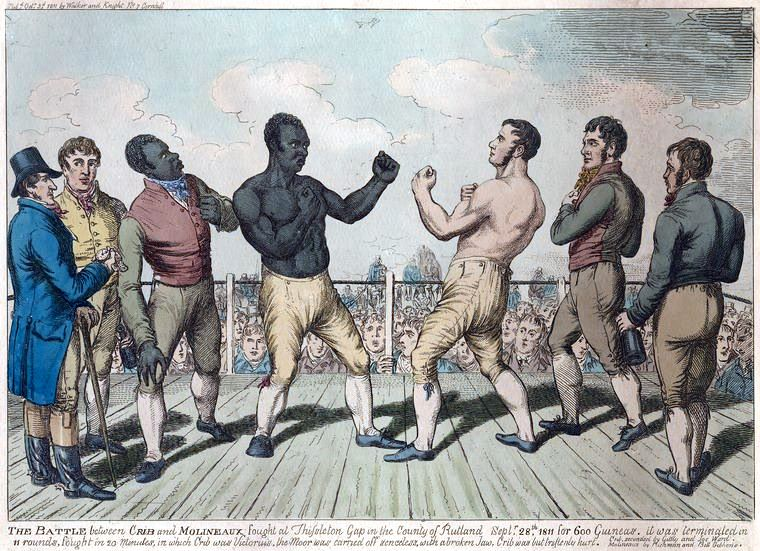

Boks, pięściarstwo – sport walki, w którym dwóch zawodników walczy ze sobą jedynie przy użyciu pięści, pierwotnie bez rękawic, a od początku XX w. już w rękawicach.

Walka na pięści jest jednym z najstarszych sportów, znanym już w starożytnej Grecji i w Cesarstwie Rzymskim[1]. Znajdował się on w programie antycznych igrzysk olimpijskich. Statyczne bijatyki dwóch
zawodników były bardzo brutalne i czasem kończyły się śmiercią. Walki te, toczone z minimalną ilością reguł, niewiele miały wspólnego z boksem – sportem, jaki narodził się w 1719 roku w Anglii.
Wówczas to James Figg, uznawany za pierwszego w historii mistrza Anglii, założył przy Tottenham Court Road w Londynie akademię boksu. Walczący nie nosili rękawic i zadawali ciosy aż któryś z nich
został znokautowany lub opadł z sił[2]. Jack Broughton, który w 1730 roku zastąpił Figga, przez 18 lat zachował mistrzowski tytuł i jako pierwszy skodyfikował podstawy zasad tego sportu. Wstrząśnięty
śmiercią na ringu jednego ze swych przeciwników, George’a Stevensona, sformułował i wprowadził w życie zbiór zasad znany jako Broughton’s Rules, które w I połowie XIX wieku zostały zastąpione przez
London Prize Ring Rules.
Zręby współczesnego zawodowego boksu wywodzą się od opublikowanych w 1867 roku w Wielkiej Brytanii zasad zwanych Queensberry Rules, które po raz pierwszy wprowadziły wymóg zakładania rękawic.
Początkowo współistniały one z zasadami londyńskimi, jednak do końca XIX wieku praktycznie je wyparły i walki w rękawicach stały się standardem (np. od 1889 roku bezwzględnie obowiązują one w USA).
Symbolem tych przemian stał się John L. Sullivan – uznawany za ostatniego mistrza w walce na gołe pięści, a zarazem pierwszego mistrza świata wagi ciężkiej w walce w rękawicach.
W roku 1916 podjęto ważną decyzję o ograniczeniu oficjalnych zawodowych walk o mistrzostwo świata do 15 rund po trzy minuty każda, z jednominutowymi przerwami. W latach 80 XX wieku, wskutek tragicznej śmierci
koreańskiego boksera Kim Duk-koo, zawodowe walki ograniczono do 12 rund.
_tries_to_land_a_punch_against_Rudolf_Kraj,_2000.jpg){kind=link}
{kind=link}